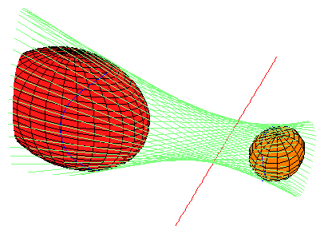
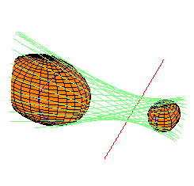
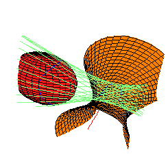
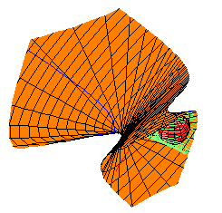
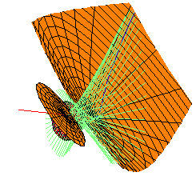

{kind=link}
{kind=link}
{kind=link}
{kind=link}

The picture below displays the envelope of lines (in light blue-green) which are perpendicular to the red line (and hence transversal to the y-z line at infinity) and also tangent to the gold sphere at the right. The curve of tangency is drawn in blue.
We are interested in other quadrics (zeroes of quadratic polynomials) which
are also tangent to the each line in this envelope.
For example, the coral ellipsoid at the left
is tangent to every line in the envelope.
In fact, these two ellipsoids fit together into a family of ellipsoids,
each of which is tangent to every line in this family.
As members of this family approach the red line,
they become increasingly cigar-shaped, eventually collapsing into the line.
(A similar phenomenon occurs at infinity.)
|  |
One may ask what other quadrics (if any) are there besides those in this family which are tangent to every line in this envelope. We used computer algebra to investigate this, and we found that the locus of quadrics tangent to this envelope is 1-dimensional, and consists of 12 components, each a smooth rational curve. Of these 12, 8 consist of imaginary conics, while 4 families consist of real quadrics.
Each thumbnail sketch below illustrates one quadric in each family, together with one of these original quadrics, for reference. They are each linked to larger pictures. The maple leaf below each picture links to Maple code used to draw them.
|  |  |  |  |
|
|
|
|
|